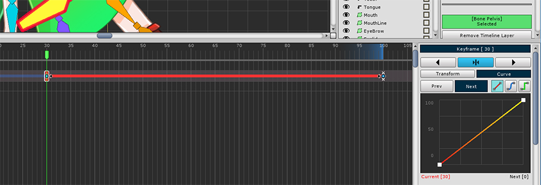
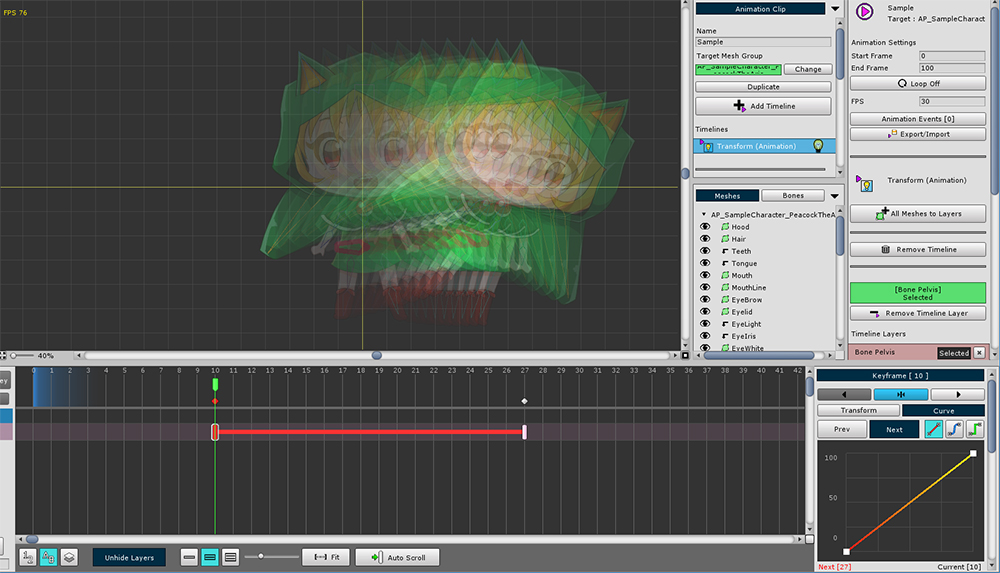

AnyPortrait > Getting Started > 2.8. Animation Curves
2.8. Animation Curves
1.0.0
Interpolation is the most important principle when understanding keyframe animation.
Interpolation is the process of calculating what form to take between a keyframe and a keyframe.
Depending on the interpolation method, even if you have the same keyframe, the result of the animation might be different.
This page covers Animation curves that deal with interpolation methods.

(1) Select one keyframe, (2) Select the Curve tab.
When you modify an animation curve, the type of curve appears in the timeline workspace as a bold line.

You can select a Previous Curve with the previous keyframe and a Next Curve with the next keyframe based on the currently selected keyframe.
The selected curve appears bright in the timeline workspace.

Animation curve detail property UI
1. Prev/Next : Select previous curve or next curve.
2. Curve type : Determines the interpolation method of the curve. They are Linear, Smooth, and Constant.
3. Edit curve : You can edit or view the curve. In the case of the Smooth method, the control points can be edited.
4. Reset Smooth Setting : In the case of the Smooth method, the control point is returned to the initial value.
5. Copy Curve to All Keyframes : Applies the current curve settings to all keyframes in the timeline layer.
6. Copy / Paste keyframe : Temporarily copy or paste keyframe information.
7. Export / Import posture : If it is a keyframe in the bone animation, you can save or open the posture.
8. Delete the keyframe
The animation is processed differently depending on the type of curve calculation method.

1. Linear
Movement, size, etc. are changed uniformly.

2. Smooth
Movement, size changes smoothly.
The user can edit the shape of the curve.
It is appropriate when giving acceleration or smoothly switching from keyframe.

3. Constant
The value changes at the end point between the keyframes.
It can give effect like sprite animation.
Let's see how it actually varies depending on the curve type.

1. Linear
The color of the curve is red.
You can see that it changes at regular intervals from start to finish.
2. Smooth
The color of the curve is blue.
The default state is similar to linear but there are some acceleration and deceleration at the beginning and end.

2-1. Accelerated Smooth
A variation example of a Smooth curve.
It keeps close to the starting keyframe value and then accelerates and changes quickly.

2-2. Decelerating Smooth
A variation example of a Smooth curve.
You can see the speed change in the start key frame and then decelerate.

3. Constant
The color of the curve is green.
There are only two interpolation states: start and end.
It is transformed based on the end point.